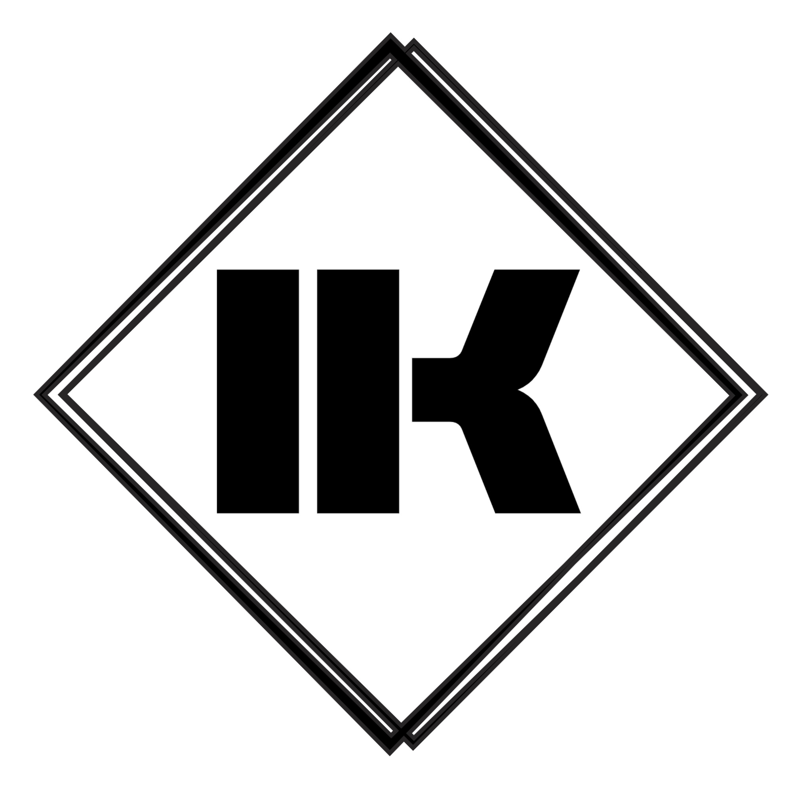

Нажмите кнопку выше, а затем скопируйте код из поля ниже:
Мод запоминает прогруженные чанки и продолжает их рисовать в игре при выходе за зону прогрузки не теряя ФПС!
Мод запоминает прогруженные чанки и продолжает их рисовать в игре при выходе за зону прогрузки не теряя ФПС!
Улучшения HUD, связанные с едой/голодом/насыщенностью.